By: Matthew Barrington
Date: April 30th, 2024
With my college career coming to a close, I had the opportunity to work on a Capstone project. This project would allow me to demonstrate skills I have developed thus far in my college career, and allowed me to take complete creative freedom over what I worked on. This is my full report of the project. In the future I will try to integrate it straight into this website using a static JavaScript front end since this is github pages, but it should still work. Please enjoy reading the process of making an automatic Catan starter!
For my project, I aimed to analyze a Catan board using computer vision and integrate machine learning techniques. Drawing on my familiarity with convolutional neural networks and the skills acquired in CS470 - Computer Vision, I focused on image recognition and classification. The primary objective was to interpret the game state of a Catan board from an uploaded image and provide mathematical insights into the gameplay.
The most challenging aspect of this project was its open-ended nature. There are numerous methods to achieve the desired outcome, and selecting the most appropriate path was a significant hurdle. My approach required a deep understanding of computer vision techniques such as canny edge detection and hough transform. Additionally, I needed to grasp essential machine learning concepts, including convolution, dataset creation, and the training and tuning of neural networks along with their hyperparameters.
Catan is a game that not only fosters connections among friends, family, and even strangers but is also deeply embedded in mathematics. Having played countless games with loved ones, I've observed how mistakes and elements of chance, such as a poor start or unlucky dice rolls, can impact the gaming experience. My project addresses this by identifying the most optimal starting positions. By simply uploading an image to a website, players can enhance their strategic approach, making the game more engaging and enjoyable for everyone involved.
Two major inspirations for this project were the development of Chess AI (https://www.chess.com/news/view/chesscom-ai-bots) and a YouTube video by Peter Whidden about using reinforcement learning to play Pokemon Red (https://www.youtube.com/watch?v=DcYLT37ImBY&t=1s). Both projects utilize mathematical strategies to optimize gameplay in board and video games. My objective was to apply machine learning and AI to Catan, a board game I enjoy. Unlike Chess AI, where extensive data is available, Catan incorporates elements of chance, presenting unique challenges. The YouTube video demonstrated that AI can enhance any game, either as an autonomous player or as a tool to better understand game dynamics.
Additionally, I discovered a related endeavor that involved scanning a Catan board using contours and the Python library OpenCV. However, this project was incomplete, only progressing as far as recognizing a hex on the board. This highlighted both the potential and the challenges in applying computer vision to board game analysis.
This project is divided into three main parts - computer vision, machine learning, and organization.
The computer vision component of this project covers everything from processing the uploaded image of a Catan board to categorizing images of numbers and hexes using the neural networks developed in the machine learning segment. A critical technique used was homography, which maps the perimeter points of the uploaded board image to a predefined template, ensuring that the corners are consistently placed. This standardization is essential for the system to correctly identify and interpret the numbers and hexes on the board.
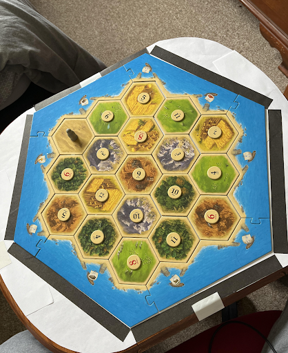The challenging aspect of this process was identifying the perimeter points of the Catan board, especially since the angle at which the image is uploaded can vary widely. To address this variability, I employed a range of computer vision techniques designed to recognize and adjust for different image orientations, enabling effective data extraction regardless of the initial image angle.
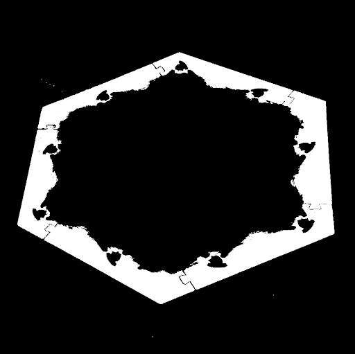The process begins by resizing the uploaded image of the Catan board to a uniform dimension of 1052x1052 pixels. See Figure 1.1 for an example upload image. To isolate the board's blue border (the ocean), the image is processed using OpenCV's BGR color model, differing from the common RGB model. A specific BGR range is set, and the image is passed through the cv2.inRange function. This function generates an output where all non-blue regions are turned black (value set to 0), while the blue regions retain their color.
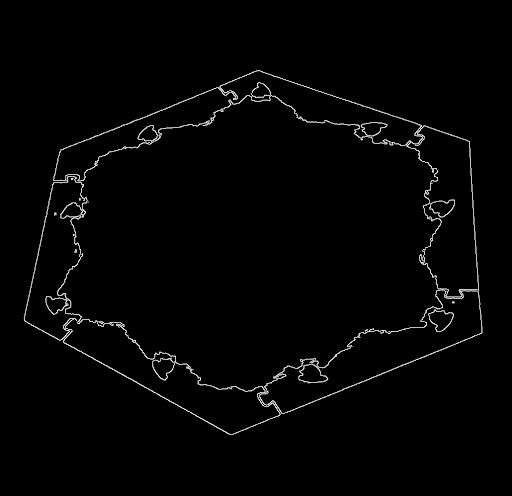To further refine the image and remove any extraneous noise, a series of OpenCV functions are employed. The bitwise-and operation filters out non-blue color channels, turning blue values to white and all others to black. See Figure 1.2 for a depiction of the image after using inRange and bitwise_and. This is followed by applying GaussianBlur with a 5x5 filter, which smooths the image to reduce noise and prepare it for edge detection. Finally, the cv2.Canny function is used to perform Canny Edge Detection, effectively highlighting the edges of the blue areas. See Figure 1.3. for an image after Canny Edge Detection is applied. This step leaves a clear outline of the perimeter of the blue ocean surrounding the board, crucial for subsequent image analysis steps.
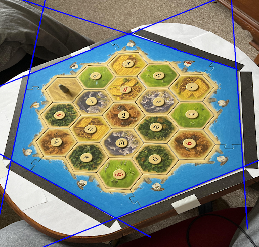Once the Catan board's perimeter is clearly delineated, a Hough Transform is applied to identify the most definitive lines in the image, represented in polar coordinates. The objective is to pinpoint the six perimeter lines of the board, which is essential for calculating the board's edge points. However, the Hough Transform does not always perform flawlessly due to the quality and characteristics of the image; not all perimeter edges may be detected among the six most definitive lines. Moreover, some lines may overlap along the same edge of the board.
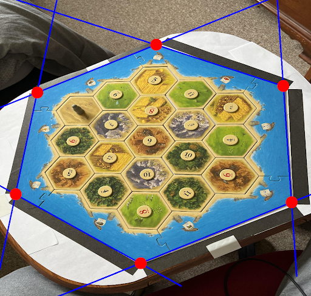To mitigate these issues and ensure accurate detection of all six perimeter lines, the algorithm initially saves the ten most confident lines. Subsequently, overlapping lines are eliminated by comparing the theta and rho values of these lines and removing those that are too similar. See Figure 1.4 for an image of a Catan board after the six edge lines are isolated and drawn. This refined approach consistently identifies the six essential perimeter lines that define the Catan board, ensuring the subsequent steps of the analysis can proceed accurately.
Having identified the six perimeter lines of the board, the next step involves calculating the 'perimeter_points'. This is achieved by converting the lines, which are initially in polar coordinate format, into slope-intercept form. Then, the intersection points of these lines are determined by solving systems of equations. See Figure 1.5 for an image of a board with all of the perimeter points displaying.
It's possible for intersections to occur within the bounds of the image that do not correspond to the actual perimeter points. To address this, the six intersection points that are closest to the canny-edge border, identified earlier, are selected as the true perimeter points. This method effectively filters out irrelevant intersections, ensuring the precise determination of the perimeter points of the board. This precision is crucial for accurately defining the playable area and further processing of the Catan board image.
With the perimeter points identified from the uploaded image, the next step involves transforming the board image using a homography. This process effectively re-maps the image to a top-down view, standardizing the spatial relationships among the numbers, hexes, and edge points. This transformation ensures that regardless of the original angle or perspective of the uploaded image, the output is consistent with a standardized, top-down orientation. See Figure 1.6 for an image of a top-down board.
This uniformity allows for precise cropping of the image to consistently extract the numbers and resource types from each hex. Ensuring that these elements are captured in the same order across different images is crucial for correctly formatting the board in a digital representation.
Once the images of the numbers and resources are extracted, they are ready to be classified. This is where the machine learning component of the project is employed. By utilizing trained neural networks, each image—whether it depicts a number or a resource type—is accurately identified and categorized, facilitating the automated interpretation and analysis of the Catan board state. This classification is essential for providing insightful feedback and strategic advice based on the current game setup.
In the machine learning segment of this project, dataset creation is pivotal, followed by the development of two distinct models tailored to the specific elements of the Catan board. The first model focuses on recognizing the numbers present on the board tiles. The dataset created for this purpose is humorously termed CATANIST, paying homage to the MNIST dataset, a foundational benchmark in deep learning for handwritten digit recognition.
The second dataset, named HEXIST, is dedicated to identifying the resource type associated with each hex on the board. Each of these datasets is meticulously compiled to encompass a broad range of instances that capture the diversity and variability of the elements they are designed to recognize. The creation of these specialized datasets is critical as it allows the models to train on highly relevant data, enhancing their accuracy and effectiveness in classifying each element accurately within the game environment. This strategic approach to dataset curation and model training ensures that the machine learning algorithms can perform with high reliability when applied to real-world gaming scenarios.
Creating a model from a custom dataset indeed involves a more extensive and intricate process compared to using a pre-existing dataset. This complexity stems from the need to collect, label, process, and validate the data before it can be used for training, which is a considerable endeavor.
For this project, all dataset creation and the subsequent training of models were conducted using PyTorch, a popular deep learning library known for its flexibility and efficiency. PyTorch provides a robust framework for building and training machine learning models, offering dynamic computation graphs that allow for more intuitive coding and experimentation. This capability is particularly useful in handling the complexities of custom datasets like CATANIST and HEXIST, enabling efficient manipulation of data and streamlined model development. The use of PyTorch also facilitates iterative testing and refining of models, allowing adjustments to be made relatively easily based on performance metrics and outcomes.
After successfully homographing the uploaded image, as detailed in the Computer Vision section, data collection for the machine learning models became straightforward. The first step involved creating a directory of ten input images. Using the Computer Vision software, data for the CATANIST and HEXIST datasets were extracted from these images, resulting in 190 images for each dataset, corresponding to the 19 hexes on a standard Catan board.
The images were then organized into two separate directories, one for CATANIST and one for HEXIST. Each of these directories was further divided into training and testing subdirectories. Within each of these, directories for each class within the dataset were created, containing the actual images. This hierarchical directory structure is essential for compatibility with PyTorch’s Torchvision library, particularly the datasets.ImageFolder module.
ImageFolder is a utility within Torchvision that facilitates the creation of datasets by automatically handling images stored in a structured directory format. To utilize this, you simply provide the root directory of your dataset along with any necessary data transformations. These transformations, essential for preparing the images for model training, were implemented using Torchvision’s transforms library, specifically version 2.
To compile the dataset into a format suitable for training, the DataLoader object from PyTorch is used. DataLoader streamlines the process of iterating over datasets during model training, efficiently managing batches and shuffling of data if required. This setup is not only systematic but also optimizes the training process, ensuring that the models are fed consistent and well-formatted data, crucial for effective learning.
For training the CATANIST dataset, the data transformation pipeline is designed to ensure the images are consistently pre-processed and augmented to enhance model generalizability. Here's how the transformation sequence is structured:
For the HEXIST training data, the data transformation sequence includes the following adjustments to enhance the dataset's variability and model's robustness:
The selection of these transformations for the CATANIST and HEXIST datasets was the result of considerable experimentation and careful consideration, aimed at accommodating a wide range of scenarios that could arise from user-uploaded images. These transformations are designed to make the machine learning models more resilient and capable of handling variations in image quality, orientation, and detail that are typical in real-world applications.
To validate the effectiveness of these transformations and ensure they function as expected, Matplotlib, a popular Python data visualization library, was utilized. By leveraging Matplotlib, you can visually inspect the images processed by the ImageFolder. Figure 2.1 and Figure 2.2 show these visuals for CATANIST and HEXIST data, respectively. This visual inspection allows for an immediate and intuitive understanding of how the transformations alter the images, providing a critical check to ensure that the data preprocessing aligns with the intended outcomes.
The CATANIST dataset is structured to reflect the distribution and variety of elements found on a Catan board, encompassing 11 distinct classes corresponding to the numbers "two" through "twelve" (excluding seven) and the "desert" hex, which has no number. This classification covers all possible hex types encountered during the game.
The dataset's size and distribution among classes are carefully planned to align with the frequency of each number's appearance on the board. Notably, "two," "twelve," and "desert" are less frequent, with "desert" appearing only once and "two" and "twelve" also typically appearing once per board, complicating data collection for these classes due to their scarcity. Conversely, the other numbers each appear twice, providing more instances for training. Specifically, the dataset includes:
Training Data:
Testing Data:
The HEXIST dataset comprises six classes: 'brick,' 'wood,' 'sheep,' 'wheat,' 'ore,' and 'desert,' each reflecting the distribution of resources on a typical Catan board. This distribution includes four hexes each of wood, sheep, and wheat; three each of ore and brick; and one desert hex, which is mirrored in the dataset's composition. Specifically, the dataset includes:
Training Data:
Testing Data
Model architecture is a critical component of this project, necessitating extensive experimentation and hyperparameter tuning to determine the most effective setup. Ultimately, a simplified ResNet architecture was chosen for its robust performance and adaptability. This architecture is detailed visually in Figure 2.3, which outlines the BasicBlock structure, and Figure 2.4, which illustrates the full ResNet architecture.
Both the CATANIST and HEXIST datasets were trained using this ResNet architecture. While the underlying architecture remained consistent, slight adjustments were made to the hyperparameters for each dataset to optimize performance. The specific hyperparameters and the results of the model training will be discussed in the subsequent sections.
Initially, the data volume for training the ResNet model on the CATANIST dataset was insufficient. To enhance model performance, random data transformations were applied to the images within the training ImageFolder. These transformations allowed for the reuse of input images up to ten times, effectively augmenting the dataset with a greater variety and quantity of training data. This approach significantly improved model results on both training and testing datasets.
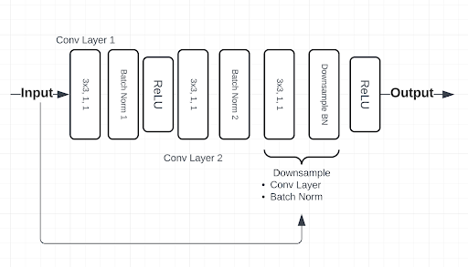Although achieving high performance was more straightforward with the HEXIST dataset, the same strategy of image reuse before data transformation was employed to ensure sufficient training data. This method of augmenting the dataset not only addresses the issue of limited data but also exposes the model to a wider range of input variations.
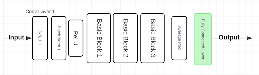One goal in this project was to create models efficiently, and optimize computing power as much as possible. This involved utilizing smaller datasets to train the network on less epochs if at all possible. The hyperparameters used to train on the CATANIST dataset are as follows:
CATANIST Results; Figure 2.5 shows loss and accuracy curves for the latest CATANIST model (“catanistv2_3.pth”):
The hyperparameters used to train on the HEXIST dataset are as follows:
HEXIST Results; Figure 2.6 shows the loss and accuracy curves for the latest HEXIST model (“hexistV1.pth”):

The models are saved into CATANIST/models and HEXIST/models respectively, and are used later (described in organization section) for image predictions on numbers and hex types.
This section of the project focuses on developing a user-friendly interface by integrating and operationalizing the underlying technology. The work primarily involved transitioning code from Jupyter notebooks, used extensively in the Computer Vision and Machine Learning stages, into Python files. This process included thorough documentation of the code to clarify each step for future users or developers.
A key objective was to modularize the code by creating functional units, enabling a single driver function to manage all the operations efficiently. This modular approach simplifies the execution of complex processes, facilitating ease of use and maintenance.
The final aspect of this section involves the practical application of the system—laying out the Catan board and evaluating starting positions. This involves utilizing the processed data to simulate game scenarios and assess the strategic value of various starting positions, enhancing gameplay strategy and decision-making.
Since the order of the hex images is read in the same order every time (depicted in Figure 3.1.), the data can be ordered in a top-down format (depicted in Figure 3.2). After getting a board layout, a list of ‘junctions’ is created, which has every possible starting position’s data (the number and resource type of each adjacent hex). Now, since all of the junctions are accounted for, they can all be scored.
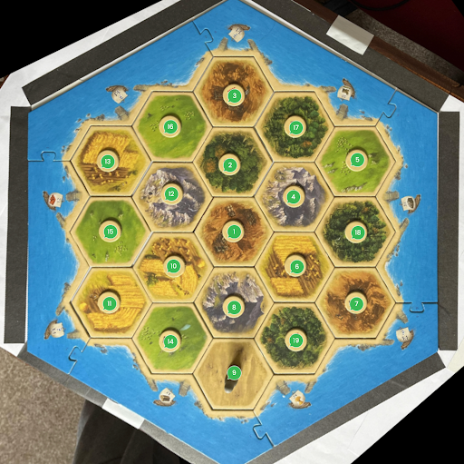Scoring the junctions has to do with the probability of adjacent hexes producing resources, and resource variability. Catan itself already provides a way of scoring based on the probability of rolling each number in the form of dots beneath each number. Each dot represented a 1/36 chance for the number to be rolled. For example, two and twelve have 1 dot each, which means there is a 1/36 chance for each number to be rolled. Fives and nines have four dots, which means there is a 4/36, or 1/9 chance of a five or a nine to be rolled (1/9 chance each). Each dot represents 1 for the score of the hex. Since a lot of junctions might have the same score, resource variation is also accounted for. For each unique resource at a junction, .5 is added to the score. An example score of a junction might be five wood, three sheep, and six ore. The five wood would be worth 4 points, since there are 4 dots beneath a five. The three sheep would be worth 2, and the six ore would be worth 5. Since there are 3 unique resources at this junction, an additional 1.5 points is added on. In total, this junction scores a 12.5, which is a very good score. An example of a bad score would be two brick on the coast. The total score of this placement would be 1.5, since there is 1 dot beneath the two, and only 1 resource is available at this junction. The top ten scores are taken from the whole list of junctions and displayed to a user.
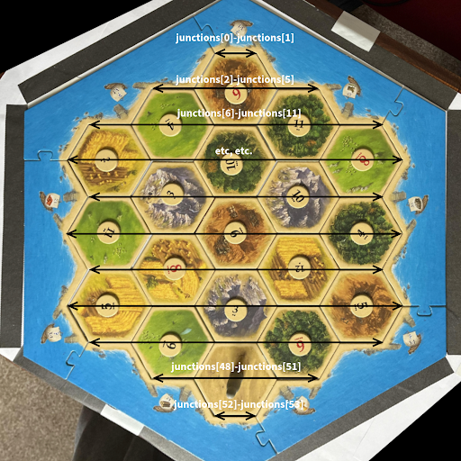To make this project feel tangible, a Flask application was created to enhance user interaction by allowing users to upload images of Catan boards. Once uploaded, these images are processed through functionalized computer vision and machine learning routines. Additional scripts interpret the outputs from these functions to analyze the game board. The application then ranks and displays the top 10 starting positions, utilizing the scoring metrics established earlier in the project.
This setup streamlines the user experience and provides actionable insights to improve the user’s strategic gameplay. Figure 4.1 is the page first displayed when a user visits the website. Users can choose a file to upload, then click the “Upload” button to start analysis. A short bulleted list is included of what to look out for when uploading an image.
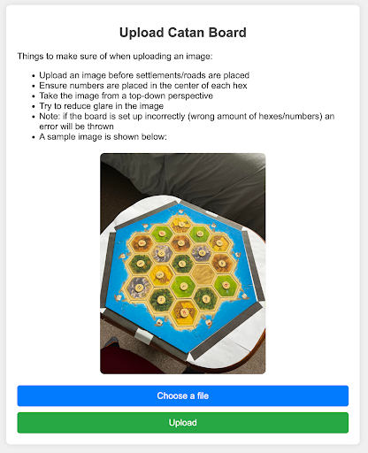Figure 4.2 depicts the results page after a successful upload. The top ten starting positions are shown directly below the processed image. Users also have the option to upload a new photo here.
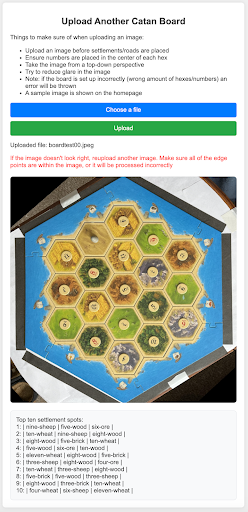Figure 4.3 shows the error page. This page can come up for a multitude of reasons. If any errors in the software occur, an image is uploaded that isn’t a Catan board, or a Catan board that is set up incorrectly is uploaded, then this error page will show up. Users have a chance to upload a new image from the error page as well.
The primary challenge in this project was mastering the use of OpenCV, a Python library essential for the Catanomics project but relatively new to me. Through this experience, I've significantly improved my skills in applying image filters, managing file directories, and conducting image analysis with software.
The second major learning curve involved developing effective neural networks, specifically a convolutional neural network (CNN), for identifying Catan numbers. Although I was already comfortable with PyTorch, working with a custom dataset presented unique challenges. This experience sharpened my ability to discern effective strategies in CNN training, particularly in the context of custom data sets. I became proficient with data transformations, the ImageFolder class, and the intricacies of pre- and post-processing images and outputs from the network.
There were several setbacks, such as the initial failure to apply grayscale transformations to the CATANIST data, which significantly hampered performance due to the influence of colors from the hex borders. Additionally, the first iteration of CATANIST, dubbed CATANISTV1, involved manually cropped data that failed to represent the details of actual board images accurately, leading to overfitting and poor evaluation outcomes. These experiences, though challenging, were invaluable for my growth and understanding in the field.
The task of homography, or geometrically correcting images to a standard view, presented considerable challenges. Initially, the techniques I applied were unsuccessful. However, after receiving valuable insights from Dr. Reale and conducting numerous experiments, I developed a reliable method for performing homography on images. The breakthrough came with the implementation of Canny Edge Detection and Hough Transform, which significantly improved the outcomes.
This experience emphasized the importance of effectively leveraging powerful functions within the project. It required not only using these advanced techniques but also critically interpreting their outputs and formatting them to serve the project's specific needs. This aspect of the project was instrumental in enhancing my understanding of how to utilize complex algorithms to achieve practical and impactful results.
One of the setbacks of this project was that the initial ambitions weren't fully realized. I had envisioned creating a comprehensive Catan AI, or at the very least, a program capable of reading the entire game state at any point—including cities, settlements, roads, and ports. However, the preprocessing of input images proved more complex and time-consuming than anticipated, significantly slowing progress.
Additionally, constructing datasets from scratch presented substantial difficulties in ensuring their accuracy and effectiveness for training models. These challenges limited the scope of the project's functionality and the sophistication of the starting position logic.
Despite these hurdles, the groundwork laid during this phase of the project has set a solid foundation for future enhancements. With the preprocessing steps now established and a better understanding of model building and dataset creation, expanding the project's capabilities and adding new functionalities would be more straightforward. It would still require further experimentation and possibly new CNN architectures, but I am now equipped with the knowledge and skills to tackle these challenges more effectively.
If I had the opportunity to restart the project with my current understanding, I would approach it with a more structured division of tasks. Initially, I was eager to dive into the machine learning aspects, which led to inefficiencies and a premature focus on applications without a robust dataset in place.
Knowing now the critical importance of data preparation in machine learning, I would prioritize establishing a comprehensive and well-preprocessed dataset from the outset. This means dedicating sufficient time to meticulously collect, clean, and prepare the data before moving on to model training. By securing the quality of the input data first, the subsequent stages involving machine learning could proceed more smoothly and efficiently, with a focus on refining the models and optimizing performance rather than troubleshooting data-related issues.
This more disciplined and phased approach would likely lead to a more successful outcome and a smoother project progression, allowing for a deeper focus on each task with the assurance that the foundation—data integrity and preprocessing—was solidly in place.
In this project, I have effectively utilized computer vision techniques, including Canny Edge Detection, image transformations, and the Hough Transform, to process images of a Catan board taken from various angles. This allowed me to generate a top-down perspective of the board, which was crucial for the subsequent stages of the project. Using this preprocessed image data, I developed and refined datasets that were instrumental in training convolutional neural networks capable of accurately identifying numbers and resource types on the Catan board.
The application I created enables users to upload an image of their game board and quickly determine the best starting positions. This functionality not only enhances the gaming experience for players, particularly those new to the game, but also leverages advanced machine learning and computer vision technologies to bring a new dimension to playing Catan. Overall, the project successfully bridges the gap between complex technological applications and recreational board gaming, making Catan more accessible and enjoyable for all players.
If I were to extend the project further, I would focus on expanding the capabilities of the machine learning models to include detection of additional game elements such as roads, settlements, cities, and ports. This expansion would involve developing new convolutional neural networks (CNNs) specifically tailored to recognize these components. The ability to detect and analyze all aspects of the game board would allow for the creation of software that could assess the game state at any given time and calculate the likelihood of each player's success, providing a dynamic overview of who is leading and why.
The first feature I would add on this project would be visualizing the top ten settlement spots on the image, allowing users to more easily be able to tell where the best starting spots are. This would be an easy feature to implement since all that needs to be found is the location of each junction, then using cv2 the ten best starting positions would be circle and labeled.
Future work would also involve code refactoring to streamline important processes. An example of where refactoring would be helpful is changing the data structure used to store the orientation of the board. A possible change is some kind of graph view of the board. New data transforms can be experimented with to see if the CATANIST and HEXIST models can be improved through pre-processing, especially with color processing for HEXIST (brightness and contrast).
Additionally, considering the strategic and probabilistic elements inherent in Catan, I would explore the possibility of optimizing gameplay through artificial intelligence. By employing reinforcement learning and simulating numerous game scenarios, I could develop an AI that learns and adapts strategies and trading patterns, ultimately providing players with actionable insights to enhance their decision-making process. This approach would not only deepen the understanding of optimal strategies in Catan but also push the boundaries of applying AI in board game contexts, potentially leading to broader applications in other strategic games.
[1] Bourke, Daniel. “Learn Pytorch for Deep Learning in a Day. Literally.” YouTube, YouTube, 24 July 2022,
www.youtube.com/watch?v=Z_ikDlimN6A (Accessed 12 Apr. 2024).
[2] Chess.com Team, “Battle Against The A.I. Bots!”, Feb 18, 2023, Chess.com: 2023,
https://www.chess.com/news/view/chesscom-ai-bots
[3] Michael Strating, “CV-Settlers”, April 10, 2018, Github.com: mikeStr8s, 2018,
https://github.com/mikeStr8s/CV-Settlers/commits/master/
[4] “OpenCV Modules.” OpenCV, docs.opencv.org/4.x/index.html (Accessed 12 Apr. 2024).
[5] “PyTorch Documentation.” PyTorch Documentation - PyTorch 2.2 Documentation,
pytorch.org/docs/stable/index.html (Accessed 12 Apr. 2024).
[6] Peter Whidden, “Training AI to Play Pokemon with Reinforcement Learning”, October 8, 2023,
Youtube: 2023, https://www.youtube.com/watch?v=DcYLT37ImBY&t=1s
[7] “Welcome to Flask.” Welcome to Flask - Flask Documentation (3.0.x),
flask.palletsprojects.com/en/3.0.x/ (Accessed 12 Apr. 2024).